Across the Moon, Mars and beyond,
humanity has left behind remarkable
machines that once explored the unknown.
Their missions may have ended, but
their stories and scientific legacy remain.
02 / THE COLLECTIONMISSION DATABASE
EXPLORE THE UNKNOWN
THE ARCHIVE.
Explore the machines that helped
humanity reach beyond Earth.
The first crewed spacecraft to land
on the lunar surface. A machine that
carried humanity into history.
MISSION
Apollo 11
SPACECRAFT
Lunar Module Eagle
DESTINATION
Mare Tranquillitatis
LANDING DATE
20 July 1969
COMMANDER
Neil Armstrong
LM PILOT
Buzz Aldrin
01 / THE MISSION STORY
THE MOMENT
HUMANITY LANDED.
On 20 July 1969, the Apollo 11 Lunar Module,
named Eagle, separated from the Command and
Service Module and began its descent towards
the lunar surface.
Commander Neil Armstrong and Lunar Module
Pilot Edwin "Buzz" Aldrin guided the spacecraft
towards Mare Tranquillitatis, making the first
crewed landing on the Moon.
"Houston, Tranquility Base here.
The Eagle has landed."
— Neil Armstrong, 20 July 1969
02 / MISSION CHRONOLOGY
THE JOURNEY
TO THE MOON.
20 JULY 1969 · 17:44 UT
Lunar Separation
Eagle undocked from the Apollo Command and
Service Module to begin its independent
descent towards the Moon.
20 JULY 1969 · 20:17:40 UT
The Eagle Has Landed
The Lunar Module touched down in
Mare Tranquillitatis, making history
as the first crewed lunar landing.
21 JULY 1969
Lunar Surface Operations
Armstrong and Aldrin conducted their
lunar surface activities and deployed
scientific experiments.
22 JULY 1969 · 00:01:01 UT
Final Disposition
Following rendezvous and docking with
the Command and Service Module, the
Lunar Module was jettisoned into lunar
orbit. Its eventual impact location
remains uncertain.
03 / ENGINEERING & ARCHITECTURE
BUILT FOR
THE LUNAR FRONTIER.
The Lunar Module was designed specifically
for operations in the Moon's environment.
Its structure consisted of two independent
stages, each built for a different phase
of the mission.
01 / LOWER STAGE
Descent Stage
The lower section of the Lunar Module
supported the spacecraft's landing
on the lunar surface.
Octagonal structural platform
Four landing legs with footpads
Descent engine thrust: 45,000 N
Remained on the lunar surface
02 / UPPER STAGE
Ascent Stage
The upper section housed the astronauts
and carried the systems required to
return them to lunar orbit.
Pressurized crew compartment
Cabin volume: approximately 6.65 m³
Ascent engine thrust: 15,000 N
Carried the crew back to lunar orbit
04 / SPACECRAFT SYSTEMS
THE TECHNOLOGY
BEHIND THE EAGLE.
01
Guidance & Navigation
The Apollo Guidance Computer,
inertial measurement equipment and
radar supported navigation, guidance
and landing operations.
02
Propulsion & Control
Separate descent and ascent engines
handled landing and return to lunar
orbit. Reaction Control System
thrusters controlled spacecraft
orientation.
03
Electrical Power
Silver-zinc batteries supplied
electrical power to the Lunar
Module's onboard systems.
04
Communications
S-band communications supported
contact with Earth, while VHF
communications linked the crew
and other Apollo vehicles.
05 / LUNAR SURFACE SCIENCE
EXPERIMENTS
LEFT ON THE MOON.
Apollo 11 was not only a landing mission.
Armstrong and Aldrin also deployed scientific
instruments that allowed researchers on Earth
to study the lunar environment.
01 / EASEP
Passive Seismic Experiment
This instrument detected vibrations
and seismic activity on the Moon,
helping scientists investigate
the Moon's internal structure.
02 / LASER RANGING
Laser Ranging Retroreflector
An array of reflectors allowed
scientists on Earth to send laser
pulses towards the Moon and measure
the Earth–Moon distance with
exceptional precision.
These instruments became part of the
scientific legacy of the Apollo 11 mission.
06 / TECHNICAL DATA
EAGLE
BY THE NUMBERS.
SPACECRAFT
Apollo Lunar Module
CALL SIGN
Eagle
CREW
2 Astronauts
LAUNCH MASS
15,103 kg
CREW COMPARTMENT
6.65 m³
LUNAR SURFACE STAY
21h 36m
LANDING SITE
Mare Tranquillitatis
MISSION STATUS
Completed
Mass figure refers to the Lunar Module's
fueled configuration. Values are presented
for the Apollo 11 mission.
07 / MISSION ARCHIVE
MOMENTS
FROM THE MOON.
A visual record of the Apollo 11 Lunar Module and humanity’s first crewed landing on the Moon.
Eagle after separation from ColumbiaNASA/JSC · AS11-44-6574The lunar surface near Eagle’s touchdown siteNASA/JSC · AS11-37-5458Edwin Aldrin beside a Lunar Module legNASA/JSC · AS11-40-5902
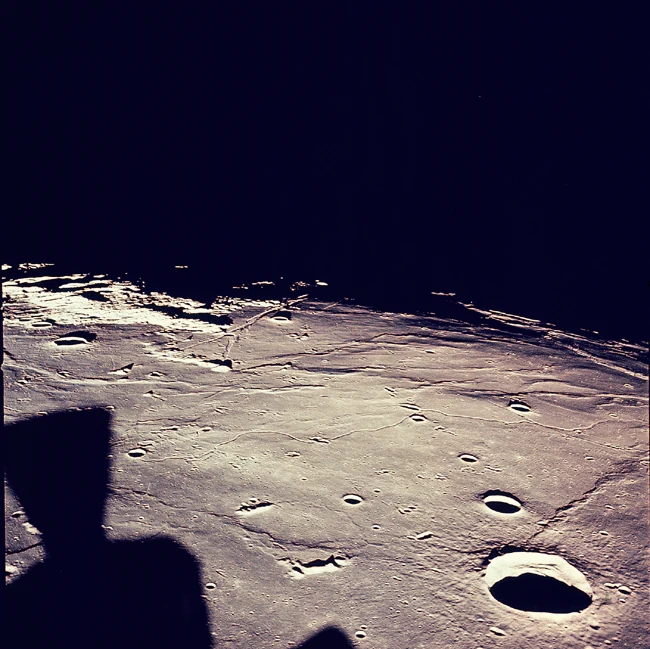
Apollo 11 landing site viewed from the Lunar ModuleNASA/JSC · AS11-37-5437
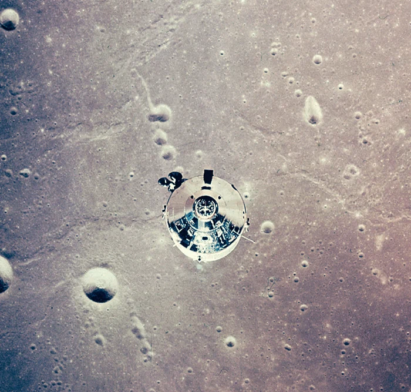
Apollo 11 Command Module Columbia over the MoonNASA/JSC · AS11-37-5445
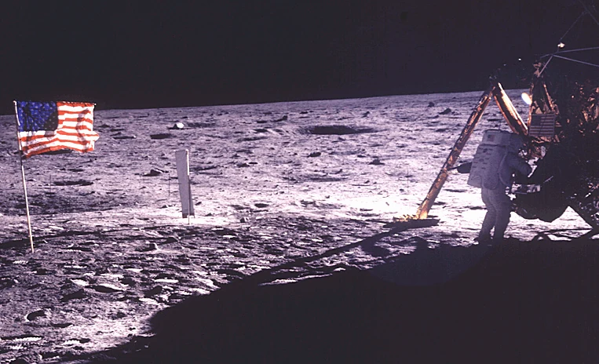
Neil Armstrong packing lunar samplesNASA/JSC · AS11-40-5886
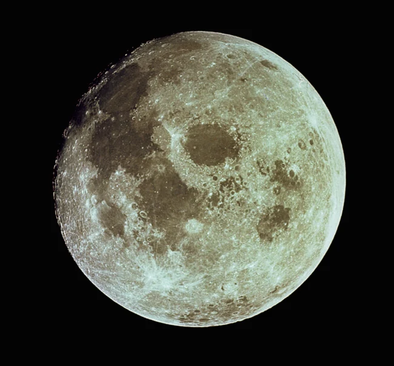
Full Moon photographed from Apollo 11NASA/JSC · AS11-44-6667
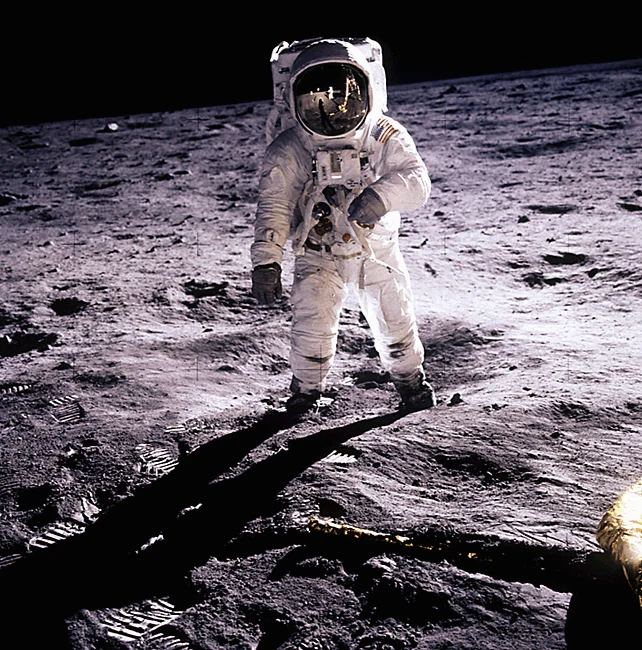
Edwin Aldrin’s visor reflects Neil Armstrong and the Lunar ModuleNASA/JSC · AS11-40-5903
Captions and archive credits accompany each photograph.
03 / FEATURED EXPLORERKEPLER / K2 MISSION
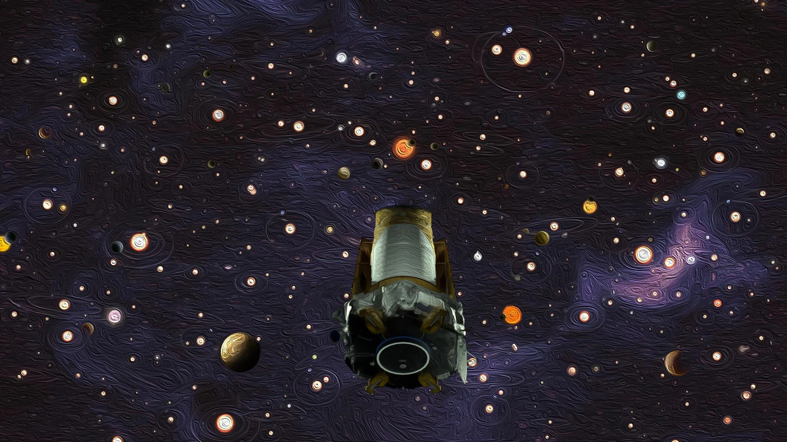
OCCURRED 8 YEARS AGO · MARCH 6, 2009
KEPLER / K2
THE SPACE TELESCOPE
The Kepler space telescope was NASA’s first planet-hunting mission,
assigned to search a portion of the Milky Way galaxy for Earth-sized
planets orbiting stars outside our solar system. During nine years
in deep space, Kepler and its K2 mission showed our galaxy contains
billions of hidden exoplanets, more planets than even stars, many
of which could be promising places for life — knowledge that
revolutionizes the understanding of our place in the cosmos.
MISSION TYPE
Space Telescope
DESTINATION
Heliocentric orbit
LAUNCH DATE
March 6, 2009
MISSION OBJECTIVE
Search for exoplanets
MISSION DURATION
Nine years
MISSION STATUS
Retired · October 30, 2018
01 / THE MISSION STORY
A SEARCH FOR
WORLDS BEYOND OUR SUN.
Launched on March 6, 2009, the Kepler space telescope combined
cutting-edge techniques in measuring stellar brightness with the
largest digital camera outfitted for outer space observations at
that time. Originally positioned to stare continuously at 150,000
stars in one star-studded patch of the sky in the constellation
Cygnus, it took the first survey of planets in our galaxy and became
the agency’s first mission to detect Earth-size planets in the
habitable zones of their stars.
Kepler detected planets by observing transits, or tiny dips in the
brightness of a star that occur when a planet crosses in front of
the star. The most common size of planet Kepler found doesn’t exist
in our solar system — a world between the size of Earth and Neptune
— and Kepler also found jam-packed planetary systems with many
planets orbiting close to their parent stars.
“When we started conceiving this mission 35 years ago, we didn’t
know of a single planet outside our solar system. Now that we know
planets are everywhere, Kepler has set us on a new course that’s
full of promise for future generations to explore our galaxy.”
— William Borucki, Kepler founding principal investigator, retired from NASA’s Ames Research Center
02 / MISSION CHRONOLOGY
NINE YEARS
OF DISCOVERY.
MARCH 6, 2009
Kepler Launches
Kepler began its mission to search a portion of the Milky Way
for Earth-sized planets orbiting stars outside our solar system.
FIRST SIX WEEKS–APRIL 2010
Early Exoplanets & the Kepler-9 System
During its first six weeks of operation, Kepler discovered
Kepler 4b, 5b, 6b, 7b and 8b. In April 2010, mission scientists
reported the first confirmed planetary system with more than
one planet transiting the same star. The result followed a
survey of more than 156,000 stars over seven months.
FEBRUARY 2011
Six Planets Around Kepler-11
NASA announced six planets orbiting Kepler-11, a yellow dwarf
star about 2,000 light years from Earth. The planets were larger
than Earth, with the largest comparable in size to Uranus and Neptune.
MAY 2013–OCTOBER 30, 2018
K2 Mission & Retirement
After Kepler lost the second of its four reaction wheels,
engineers developed the K2 mission, using sunlight pressure
to help maintain the spacecraft’s pointing. K2 shifted its field of view to new portions of the sky roughly every three
months along the ecliptic plane. The mission was initially expected
to conduct 10 campaigns with the remaining fuel, but completed 19.
After nine years in deep space, Kepler ran out of fuel needed for
further science operations and was retired on October 30, 2018,
in its current, safe orbit away from Earth.
03 / ENGINEERING & ARCHITECTURE
BUILT AROUND
A TELESCOPE.
The spacecraft was basically a single instrument, with a
specially designed telescope and image sensor array surrounded
by the spacecraft built around it.
01 / TELESCOPE
Aperture & Image Sensor
Kepler used a specially designed 3-foot (1-meter) diameter
aperture telescope and an image sensor array to observe
stellar brightness.
02 / PRIMARY MIRROR
Built for Deep Space
The telescope’s mirror measured 4 feet, 7 inches
(1.4 meters) in diameter, one of the largest mirrors
beyond Earth orbit.
04 / SPACECRAFT SYSTEMS
THE TECHNOLOGY
BEHIND THE SEARCH.
01
Transit Observation
Kepler detected planets by measuring tiny dips in a star’s
brightness when a planet crossed in front of it.
02
Stellar Monitoring
The mission was designed to monitor about 100,000
main-sequence stars over a period of three-and-a-half years.
03
Precision Pointing
The spacecraft required three functioning reaction wheels
to position its telescope. It lost the second of four wheels
in May 2013.
04
K2 Pointing Method
The Sun’s light pressure pushed the spacecraft around. K2
used that pressure to maintain pointing, like a kayak steering
into the current, while continuing to hunt planets across a
larger swath of sky along the ecliptic plane.
05 / EXOPLANET SCIENCE
“PLANETS ARE
EVERYWHERE.”
Kepler opened a new view of the diversity of planets in our galaxy.
Its discoveries included systems unlike our own and worlds between
the size of Earth and Neptune.
01 / PLANETARY SYSTEMS & HABITABLE ZONES
A Range of Worlds
Kepler-11 included six planets. In some systems, many planets
orbit close to their parent stars, making our inner solar
system look sparse by comparison.
Analysis of Kepler’s discoveries concludes that 20 to
50 percent of stars visible in the night sky are likely to
have small, possibly rocky planets similar in size to Earth
in their habitable zones, where liquid water might pool on
a planet’s surface.
02 / K2 RESEARCH & PUBLIC DATA
A Wider Survey
K2 raised Kepler’s count of surveyed stars to more than
500,000 and lasted as long as the first mission. It also
studied objects in our solar system, exploded stars and
distant supermassive black holes.
Kepler’s extended-mission data were made available to the
public and science community immediately, allowing discoveries
at an incredible pace and setting a high bar for other missions.
SCIENTIFIC LEGACY · MORE THAN 2,600 PLANET DISCOVERIES
After nine years in deep space collecting data that revealed our
night sky to be filled with billions of hidden planets, Kepler
leaves a legacy of more than 2,600 planet discoveries from outside
our solar system, many of which could be promising places for life.
Observations of so many stars have helped scientists better
understand stellar behaviors and properties. Kepler data also
support research into the history of the Milky Way and the
beginning stages of supernovae used to study how fast the universe
is expanding. Before retirement, the team completed observation
campaigns and downloaded science data after warnings of low fuel.
Scientists are expected to spend a decade or more searching for new
discoveries in the data Kepler provided.
The latest data from Campaign 19 complement data from NASA’s
Transiting Exoplanet Survey Satellite, launched in April 2018.
TESS builds on Kepler’s foundation by searching some 200,000 of
the brightest and nearest stars to Earth for planets that may later
be explored for signs of life by missions such as NASA’s James Webb
Space Telescope.
06 / TECHNICAL DATA
KEPLER / K2
BY THE NUMBERS.
MISSION TYPE
Space Telescope
LAUNCH
March 6, 2009
APERTURE
3 ft (1 m)
MIRROR DIAMETER
4 ft 7 in (1.4 m)
ORIGINAL TARGET
About 100,000 stars
K2 CAMPAIGNS
19
STARS SURVEYED
More than 500,000
PLANETS DISCOVERED
More than 2,600
Kepler was retired on Oct. 30, 2018, after nine years in deep space.
07 / MISSION ARCHIVE
KEPLER / K2
IMAGE ARCHIVE.
NASA artist concepts show the Kepler spacecraft, its K2 mission profile, and planetary systems discovered by the mission.
Kepler in space · artist conceptNASA/Ames/JPL-Caltech · PIA11824Kepler’s K2 mission profile · artist conceptNASA/Ames/JPL-Caltech · PIA18904Kepler planetary systems in motion · artist conceptNASA/Ames/UC Santa Cruz · PIA15264
Captions and archive credits accompany each photograph.
03 / FEATURED EXPLORERSURVEYOR PROGRAM · SURVEYOR 3
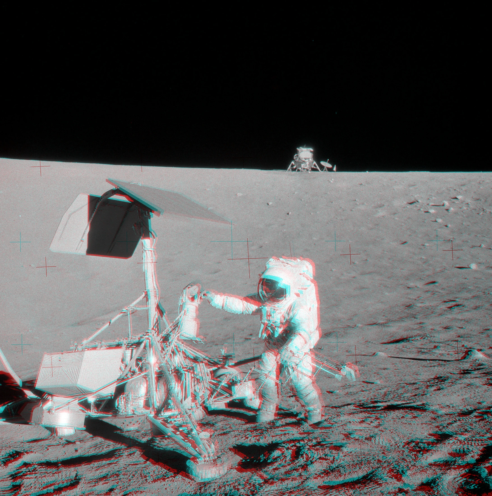
APRIL 20, 1967 · THE MOON
SURVEYOR 3
THE SURFACE SAMPLER
The third engineering flight in the Surveyor series and the
first to carry a surface-sampling instrument. Surveyor 3
tested lunar soil strength for future Apollo landings.
MISSION
Surveyor 3
SPACECRAFT
Surveyor-C
MISSION TYPE
Lander
LAUNCH DATE
April 17, 1967
LUNAR LANDING
April 20, 1967
LANDING SITE
Oceanus Procellarum
01 / THE MISSION STORY
TESTING
THE LUNAR SURFACE.
Surveyor 3 was designed for a soft landing on the Moon and surface
sampling to assess lunar soil strength for Apollo landings. Managed
by NASA / JPL, it was the third engineering flight in the Surveyor
series and the first Surveyor to carry a surface-sampling instrument.
Surveyor 3 landed in southeastern Oceanus Procellarum. It was also
the first Surveyor to start from Earth parking orbit, using the
Centaur's multi-burn capability.
02 / MISSION CHRONOLOGY
FROM LAUNCH
TO LUNAR VISIT.
APRIL 17, 1967 · 07:05:01 UT
Launch from Cape Canaveral
Surveyor 3 launched from Launch Complex 36B aboard an Atlas
Centaur (AC-12 / Atlas D no. 292 / Centaur D).
APRIL 20, 1967 · 00:04:17 UT
Soft Landing on the Moon
Surveyor 3 landed in southeastern Oceanus Procellarum at
3° S, 23.41° W.
MAY 4, 1967
Last Contact
May 4, 1967 is the last contact date listed for Surveyor 3.
NOVEMBER 18–19, 1969
Apollo 12 Visits Surveyor 3
Apollo 12 astronauts Charles Conrad Jr. and Alan L. Bean landed
Intrepid about 197 yards (180 m) away. On the second EVA, they
recovered Surveyor 3's soil scoop and TV camera for analysis of
long-term lunar exposure.
03 / ENGINEERING & ARCHITECTURE
BUILT TO
TEST THE MOON.
Surveyor 3 combined a soft-landing mission with instruments for
observing and sampling the lunar surface.
01 / SURVEYOR PROGRAM
A Flight of Firsts
Surveyor 3 was the series' third engineering flight and its
first mission to carry a surface-sampling instrument.
02 / SPACECRAFT
Surveyor-C
The spacecraft mass was 2,200 pounds (997.9 kg). Mission
design and management were by NASA / JPL.
04 / SPACECRAFT SYSTEMS
INSTRUMENTS FOR
THE LUNAR SURFACE.
01
TV Camera
The camera carried 25 mm and 100 mm lenses and transmitted
images in 200-line and 600-line modes.
02
Surface Sampler
The sampler could reach up to 5 ft (1.5 m) and dig as deep
as 7 in (18 cm).
03
Atlas Centaur
Centaur multi-burn capability allowed Surveyor 3 to begin
its journey from Earth parking orbit.
04
Descent Radar
Radar confusion during descent caused two bounces, about
33 ft (10 m) and then 10 ft (3 m), before the soft landing.
05 / LUNAR SURFACE SCIENCE
READING
THE LUNAR SOIL.
Surveyor 3 sampled and tested lunar material to assess whether the
surface could support an Apollo Lunar Module.
01 / SURFACE TESTS
Soil Strength
Surveyor 3 performed 4 trenches, 4 bearing tests, and
13 impact tests. The soil was described as having a
consistency similar to wet sand.
Its reported bearing strength was approximately 10 psi /
0.7 kg/cm² / 98 kPa, described in the source as sufficient
to support an Apollo Lunar Module.
02 / IMAGING & FOLLOW-UP
A Lasting Record
Surveyor 3 transmitted 6,326 TV images. Apollo 12 astronauts
later recovered its soil scoop and camera to analyze their
long-term exposure on the Moon.
06 / TECHNICAL DATA
SURVEYOR 3
BY THE NUMBERS.
NATION
United States of America (USA)
MISSION DESIGN & MANAGEMENT
NASA / JPL
SPACECRAFT MASS
2,200 lb (997.9 kg)
LAUNCH VEHICLE
Atlas Centaur
LAUNCH SITE
Cape Canaveral · LC 36B
LANDING SITE
Southeastern Oceanus Procellarum
LANDING COORDINATES
3° S, 23.41° W
LAST CONTACT
May 4, 1967
07 / MISSION ARCHIVE
SURVEYOR 3
IMAGE ARCHIVE.
Apollo 12 photographed Surveyor 3 at its landing site, including the probe, its television camera, and its surface sampler.
Surveyor 3 and the Apollo 12 Lunar ModuleNASA/JSC · AS12-48-7133Charles Conrad examines the Surveyor 3 cameraNASA/JSC · AS12-48-7136Surveyor 3 footpad and surface samplerNASA/JSC · AS12-48-7110
Captions and archive credits accompany each photograph.
03 / FEATURED EXPLORERAPOLLO 15 · LUNAR ROVING VEHICLE
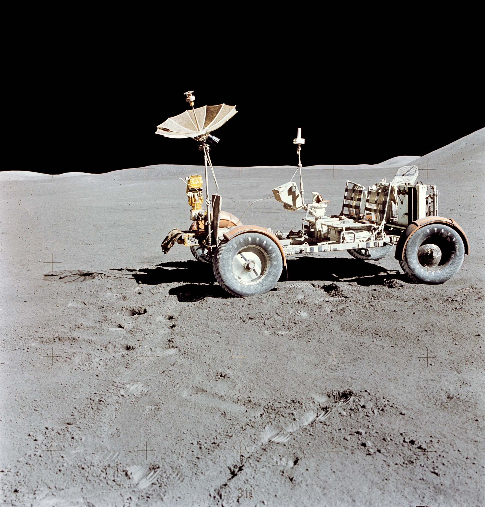
30 JULY 1971 · MARE IMBRIUM
APOLLO 15
THE LUNAR ROVER
The Lunar Module Falcon carried a Lunar Roving Vehicle used
to explore regions near the Apollo 15 landing site. The mission
also deployed the Apollo Lunar Surface Experiments Package.
MISSION
Apollo 15
LUNAR MODULE
Falcon
DESTINATION
Mare Imbrium
LANDING DATE
30 July 1971
COMMANDER
David R. Scott
LM PILOT
James B. Irwin
01 / THE MISSION STORY
EXPLORING
BEYOND THE LANDER.
Apollo 15's Lunar Module Falcon was the fourth crewed vehicle to
land on the Moon. Commander David R. Scott and Lunar Module Pilot
James B. Irwin were the seventh and eighth people to walk on the Moon.
Falcon carried a Lunar Roving Vehicle, an Apollo Lunar Surface
Experiments Package, and other scientific and sample-collection
equipment. The rover was used to explore regions within 5 km of
the Lunar Module landing site.
02 / MISSION CHRONOLOGY
FROM LUNAR
ORBIT TO EXPLORATION.
30 JULY 1971 · 18:13:30 UT
Lunar Module Separation
Falcon separated from the Apollo Command/Service Module.
30 JULY 1971 · 22:16:29 UT
Landing at Mare Imbrium
The Lunar Module landed in the Mare Imbrium region at the foot
of the Apennine mountain range.
LUNAR SURFACE OPERATIONS
Rover Exploration
The Lunar Roving Vehicle was used to explore regions within
5 km of the Lunar Module landing site.
DURING THREE EVAS
Surface Work & Sample Collection
Scott and Irwin conducted three lunar surface EVAs totaling
18 hours and 35 minutes, collecting 77.31 kg of rock and soil.
03 / ENGINEERING & ARCHITECTURE
A TWO-STAGE
LUNAR SPACECRAFT.
The Lunar Module was designed for space operations near and on the
Moon. Its descent stage supported landing, while the ascent stage
housed the crew.
01 / DESCENT STAGE
Landing Platform
The lower stage was octagonal and had four landing legs
with footpads. Its engine thrust was 45,000 N. For Apollo
15, 16, and 17, it also served as the platform from which
the ascent stage launched.
02 / ASCENT STAGE
Crew Compartment
The upper stage housed the crew in a 6.65 cubic meter
compartment. Its engine thrust was 15,000 N.
04 / SPACECRAFT SYSTEMS
THE TECHNOLOGY
SUPPORTING THE MISSION.
01
Guidance & Maneuvering
Radar ranging supported maneuvering. Guidance used an
inertial measurement unit, radar, and the Apollo Guidance
Computer.
02
Power & Communications
Silver-zinc batteries supplied power. S-band communications
linked the spacecraft with Earth, while VHF linked crew and
vehicles.
03
Lunar Roving Vehicle
The LRV was used to explore regions within 5 km of the
Lunar Module landing site.
04
ALSEP Power
A SNAP-27 radioisotope thermoelectric generator powered
ALSEP operations. Heat from Plutonium-238 decay, with an
89.6-year half-life, was converted to electricity by
thermocouples. Output was approximately 70 W DC at 16 V
(63.5 W after one year), routed through the central station's
power-conditioning and distribution units.
05 / LUNAR SURFACE SCIENCE
EXPERIMENTS
LEFT ON THE MOON.
The Apollo Lunar Surface Experiments Package carried instruments
deployed on the surface and connected by cables to a central station.
01 / ALSEP
Surface Instruments
The listed instruments were a passive seismometer, lunar
surface magnetometer, solar wind spectrometer, suprathermal
ion detector, cold cathode ion gauge, lunar dust detector,
and heat flow experiment.
02 / LUNAR FIELD WORK
Rover Exploration & Samples
During three EVAs totaling 18 hours and 35 minutes, Scott
and Irwin collected 77.31 kg of rock and soil samples.
The LRV explored regions within 5 km of the landing site.
06 / TECHNICAL DATA
APOLLO 15
BY THE NUMBERS.
LUNAR MODULE
Falcon
CREW
David R. Scott · James B. Irwin
LANDING REGION
Mare Imbrium
LM TOTAL MASS
16,430 kg
DESCENT STAGE
45,000 N thrust
ASCENT STAGE
15,000 N thrust
CREW COMPARTMENT
6.65 m³
LRV EXPLORATION RANGE
Within 5 km of the landing site
The supplied mass is the total mass of the Lunar Module ascent and descent stages.
07 / MISSION ARCHIVE
APOLLO 15
IMAGE ARCHIVE.
Apollo 15 crew members work with the Lunar Roving Vehicle at Hadley–Apennine during the first and third EVAs.
James Irwin works at the Lunar Roving VehicleNASA/JSC · AS15-86-11603David Scott seated in the Lunar Roving VehicleNASA/JSC · AS15-85-11471The Lunar Roving Vehicle during EVA 3NASA/JSC · AS15-88-11901
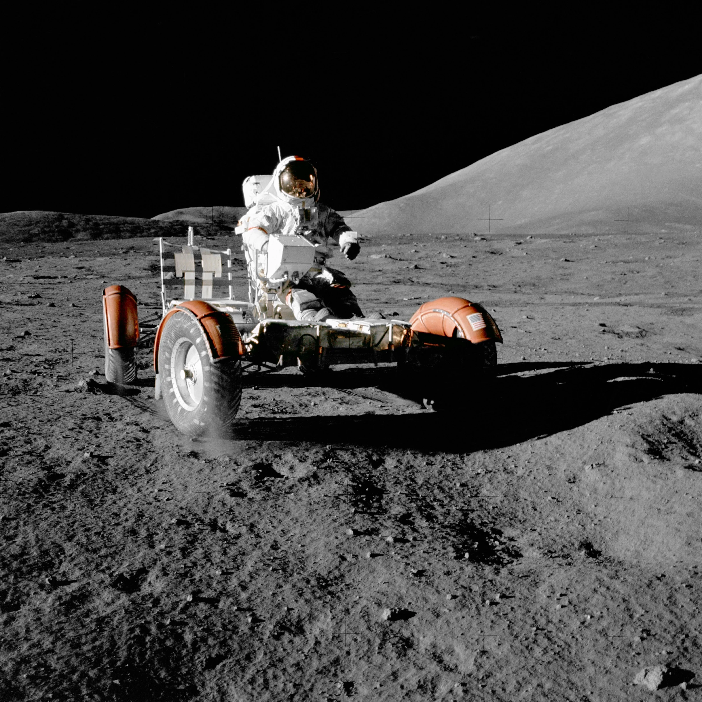
Apollo 17 Lunar Roving Vehicle on the MoonNASA/NSSDC · AS17-147-22526
Lunar Roving Vehicle deployment illustrationNASA/NSSDC · LRV deployment art
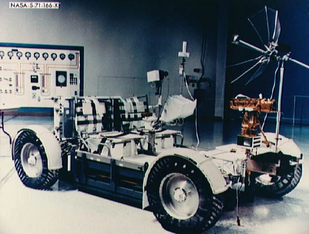
Lunar Roving VehicleNASA/NSSDC · S71-00166
Captions and archive credits accompany each photograph.
03 / FEATURED EXPLORERMARS PATHFINDER · SOJOURNER
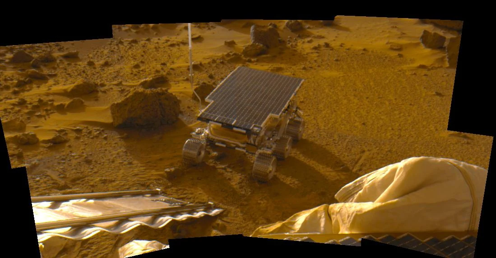
JULY 4, 1997 · ARES VALLIS
SOJOURNER
THE FIRST ROVER
Mars Pathfinder delivered Sojourner, the first wheeled vehicle
to explore the Martian surface, as a technology demonstration
of low-cost landing and mobility.
MISSION
Mars Pathfinder
ROVER
Sojourner
MISSION TYPE
Technology demonstration
LAUNCH DATE
December 4, 1996
LANDING DATE
July 4, 1997
LANDING SITE
Ares Vallis
01 / THE MISSION STORY
A SMALL ROVER
ON A NEW WORLD.
NASA's Mars Pathfinder delivered Sojourner to the Martian surface
to demonstrate low-cost landing and mobility. Sojourner was the
first wheeled vehicle to explore the surface of Mars.
The lander was named Carl Sagan Memorial Station. The rover was
named for American civil-rights crusader Sojourner Truth. Ares
Vallis, an ancient flood plain in Mars' northern hemisphere, was
selected for safety and its variety of flood-deposited rocks.
02 / MISSION CHRONOLOGY
FROM EARTH
TO ARES VALLIS.
DECEMBER 4, 1996
Launch
Mars Pathfinder launched from Cape Canaveral on a Delta II rocket.
JULY 4, 1997
Landing at Ares Vallis
Pathfinder landed at Ares Vallis using parachutes and
multi-lobed airbags.
JULY 5, 1997 · NIGHT OF SOL 2
Sojourner Rolls Down the Ramp
The rover rolled down the rear ramp of the lander onto the
Martian surface.
SEPTEMBER 27, 1997
Final Data Transmission
The final data transmission was received on this date.
03 / ENGINEERING & ARCHITECTURE
A LIGHTWEIGHT ROVER
AND AIRBAG LANDING.
Pathfinder used parachutes and multi-lobed airbags to deliver
Sojourner to the surface.
01 / SOJOURNER
Small by Design
The rover weighed 23 pounds (10.6 kg) and stood about
1 foot (30 cm) tall before rolling down the lander's ramp.
02 / LANDING SYSTEM
Airbag-Cushioned Touchdown
Pathfinder's multi-lobed airbag landing system bounced
about 15 times, as high as 50 feet, before settling about
1 km from the initial impact point. It was the first use
of this landing technique.
04 / SPACECRAFT SYSTEMS
TOOLS FOR
LANDING AND DISCOVERY.
01
APXS
The Alpha Proton X-ray Spectrometer measured the elemental
composition of rocks and soils.
02
Terrain Cameras
Cameras on Sojourner supported terrain imaging.
03
Engineering Cameras
Cameras also documented the rover's engineering work.
04
Parachutes & Airbags
Pathfinder used parachutes and giant multi-lobed airbags
to cushion its landing.
05 / MARS SCIENCE
ROCKS, SOIL
AND ANCIENT WATER.
Sojourner examined Martian rocks and soil while Pathfinder returned
images, chemical analyses, and weather data.
01 / RETURNED DATA
A Detailed Surface Record
Pathfinder and Sojourner returned 2.3 billion bits of data:
more than 16,500 lander images, 550 rover images, more than
15 chemical analyses of rocks and soil, and extensive
weather data.
02 / WATER EVIDENCE
A Warmer, Wetter Past
Rounded pebbles and cobbles suggested conglomerates formed
in running water, evidence that Mars once had liquid water
and a thicker atmosphere.
Ares Vallis was selected for its variety of flood-deposited
rocks. Early Mars experienced water volumes comparable to
the Great Lakes arriving in about two weeks.
06 / TECHNICAL DATA
SOJOURNER
BY THE NUMBERS.
ROVER MASS
23 lb (10.6 kg)
ROVER HEIGHT
About 1 ft (30 cm)
LAUNCH VEHICLE
Delta II
LAUNCH SITE
Cape Canaveral
LANDING SITE
Ares Vallis
LAUNCH DATE
December 4, 1996
LANDING DATE
July 4, 1997
FINAL DATA TRANSMISSION
September 27, 1997
07 / MISSION ARCHIVE
SOJOURNER IMAGE ARCHIVE.
A newly deployed Sojourner, its work near the rock Yogi, and its view back toward the Pathfinder lander.
Newly deployed Sojourner roverNASA/JPL · PIA01551Sojourner does a wheelie on YogiNASA/JPL · PIA00670Sojourner’s view of the Pathfinder landerNASA/JPL · PIA01121
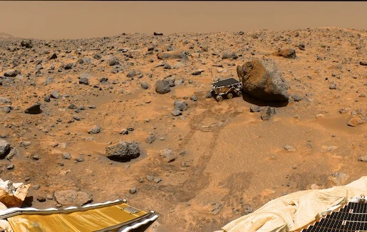
Sojourner rover on the Martian surfaceAstronomy.com · user-supplied image
Captions and archive credits accompany each photograph.
03 / FEATURED EXPLORERMARS EXPLORATION ROVERS · MER-A & MER-B
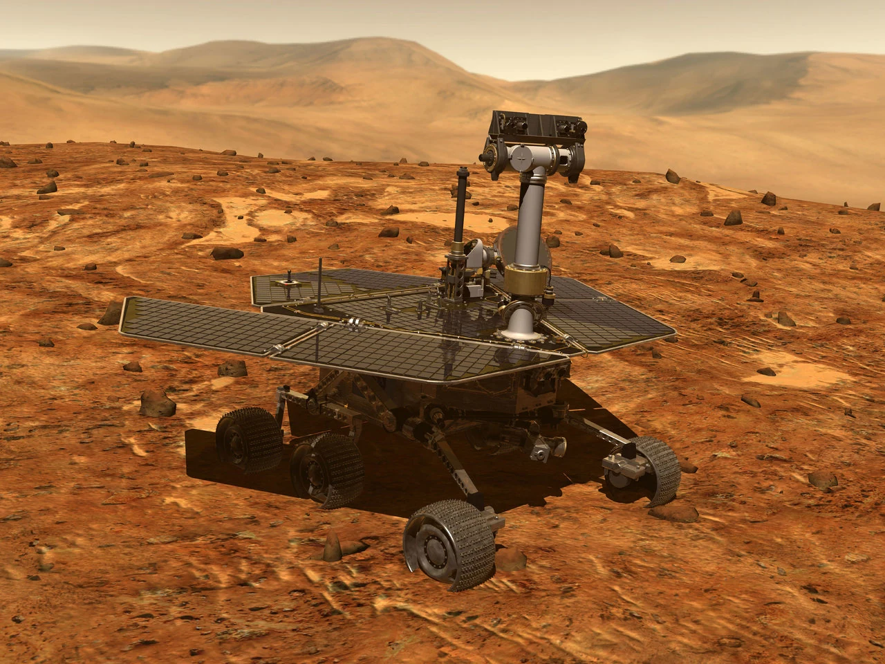
SPIRIT & OPPORTUNITY · MARS
SPIRIT &
OPPORTUNITY.
NASA's twin Mars rovers studied the history of climate and
water, seeking signs of ancient water and assessing whether
the planet could have sustained microbial life.
MISSION
Mars Exploration Rovers
ROVERS
Spirit · Opportunity
OBJECTIVE
Study Martian climate and water
SPIRIT LAUNCH
June 10, 2003
OPPORTUNITY LAUNCH
July 7, 2003
PRIMARY MISSION
90 sols
01 / THE MISSION STORY
TWIN ROVERS
FOLLOWING THE WATER.
Spirit (MER-A) and Opportunity (MER-B) were sent to study the
history of climate and water at Martian sites where conditions may
once have been favorable to life. Their work sought signs of ancient
water and examined whether Mars could have sustained microbial life.
Each rover was about the size of a golf cart. Spirit landed in
Gusev Crater, while Opportunity landed at Meridiani Planum, inside
Eagle Crater. Both operated far beyond their 90-sol primary mission.
02 / MISSION CHRONOLOGY
TWO JOURNEYS
ACROSS MARS.
JUNE 10, 2003
Spirit Launches
MER-A launched from Cape Canaveral, Florida, on a Delta 7925 rocket.
JULY 7, 2003
Opportunity Launches
MER-B launched from Cape Canaveral on a Delta 7925H rocket.
JANUARY 3 & 24, 2004
Landings on Mars
Spirit landed inside Gusev Crater on January 3. Opportunity
landed at Meridiani Planum, inside Eagle Crater, on January 24.
2010–2019
Mission Ends
Spirit lost communication in March 2010; NASA declared its
mission complete on May 25, 2011. Opportunity fell silent on
June 10, 2018, and its mission was declared ended on
February 13, 2019.
03 / ENGINEERING & ARCHITECTURE
BUILT TO MOVE
ACROSS MARS.
Both rovers used a protected entry, descent, and landing sequence
before beginning surface operations.
01 / ROVER DESIGN
Golf-Cart Size
Each rover was about the size of a golf cart. Total launch
mass was 2,341 pounds (1,062 kg), with the rover itself
about 408 pounds (185 kg).
02 / ENTRY, DESCENT & LANDING
Airbag-Cushioned Arrival
A protective aeroshell, parachutes, retrorockets, and
airbags helped deliver each rover. The rovers bounced
dozens of times before coming to rest.
04 / SPACECRAFT SYSTEMS
A MOBILE
SCIENCE LABORATORY.
01
Mast Assembly
The mast carried panoramic cameras (Pancam), navigation
cameras (Navcam), and a Miniature Thermal Emission
Spectrometer (Mini-TES).
02
Robotic Arm
The Instrument Deployment Device carried instruments
to examine rocks and soil at selected locations.
03
Rock & Soil Instruments
The payload included a Mössbauer Spectrometer, Alpha
Particle X-ray Spectrometer (APXS), and Microscopic
Imager (MI).
04
Rock Abrasion & Dust
A Rock Abrasion Tool (RAT) and magnets for collecting
dust particles were part of each rover's scientific payload.
05 / MARS SCIENCE
TWO SITES
WITH A WET HISTORY.
The twin missions explored different Martian regions and returned
evidence about water and climate.
01 / SPIRIT · GUSEV CRATER
Columbia Memorial Station
Gusev was described as a possible former lake inside a giant
impact crater. Spirit uncovered strong evidence that Mars
was once much wetter and traveled 4.8 miles (7.73 kilometers).
Designed for 90 sols, Spirit operated for 6 years, 2 months,
and 19 days. Its site name honored the Space Shuttle
Columbia crew.
02 / OPPORTUNITY · MERIDIANI PLANUM
Challenger Memorial Station
Opportunity landed inside Eagle Crater, where mineral
deposits suggested a wet history. Opportunity became the
first human enterprise to travel a marathon distance on
another world, reaching 28.06 miles (45.16 kilometers).
It operated for nearly 15 years. The landing-site name
honored the Space Shuttle Challenger crew.
06 / TECHNICAL DATA
SPIRIT & OPPORTUNITY
BY THE NUMBERS.
PRIMARY MISSION
90 sols
TOTAL LAUNCH MASS · EACH
2,341 lb (1,062 kg)
ROVER MASS · EACH
About 408 lb (185 kg)
SPIRIT DISTANCE
4.8 mi (7.73 km)
SPIRIT OPERATING TIME
6 years, 2 months, 19 days
OPPORTUNITY DISTANCE
28.06 mi (45.16 km)
OPPORTUNITY OPERATING TIME
Nearly 15 years
OPPORTUNITY MARATHON
26.219 mi (42.195 km)
07 / MISSION ARCHIVE
SPIRIT & OPPORTUNITY IMAGE ARCHIVE.
Spirit’s Columbia Hills panorama and two views from Opportunity’s exploration of Eagle Crater.
Spirit’s sweeping view of the Columbia HillsNASA/JPL-Caltech/Cornell · PIA03252Opportunity eyeing Eagle CraterNASA/JPL/Cornell · PIA05600Opportunity’s Eagle Crater traverse areaNASA/JPL/Ames/Cornell/Washington University in St. Louis · PIA05595
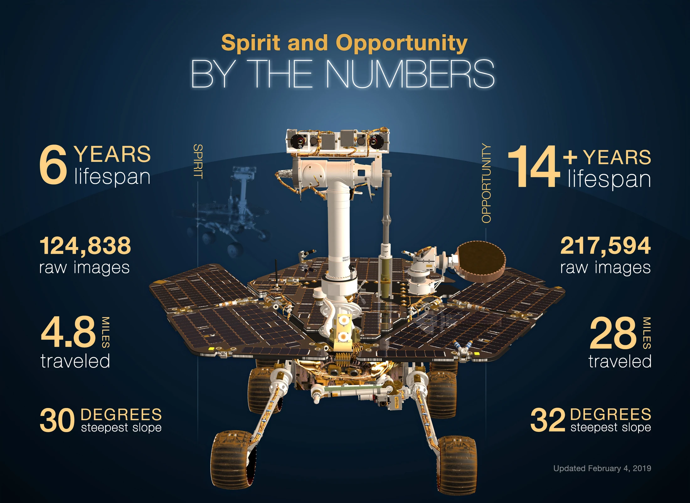
Spirit and Opportunity: by the numbersNASA/JPL · mission infographic
Captions and archive credits accompany each photograph.
03 / FEATURED EXPLORERVIKING PROGRAM · ORBITERS & LANDERS
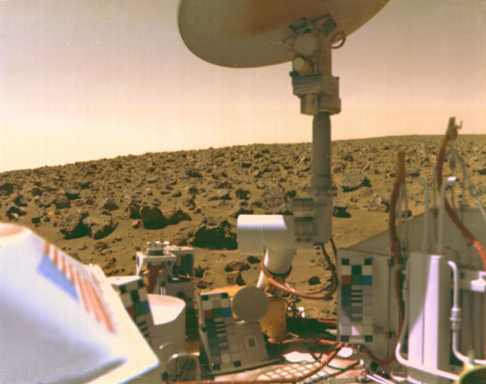
VIKING 1 & 2 · MARS
VIKING
LANDERS & ORBITERS.
Each Viking spacecraft paired an orbiter with a lander to
reach Mars, study its surface, and investigate the possibility
of life.
MISSION
Viking 1 & 2
SPACECRAFT
Orbiter and lander
TARGET
Mars orbit and landing
LAUNCH VEHICLE
Titan IIIE-Centaur
VIKING 1 LAUNCH
August 20, 1975
VIKING 2 LAUNCH
September 9, 1975
01 / THE MISSION STORY
TWO SPACECRAFT
TO STUDY MARS.
Each Viking spacecraft included an orbiter and a lander. The
program was designed to reach Mars and collect evidence about
the possibility of life. The landers were much larger versions of
the Surveyor lunar lander. Viking 1 made the first truly successful
landing on Mars in 1976; the Soviet Mars 3 lander touched down in
1971, but contact was lost a few seconds later.
Viking 1's orbiter returned images of its primary landing site
in the Chryse region, which scientists found rougher than expected.
The landers carried cameras, soil-analysis instruments, and
experiments to study the Martian environment.
02 / MISSION CHRONOLOGY
TWO ARRIVALS
ON MARS.
AUGUST 20, 1975
Viking 1 Launches
Viking 1 launched aboard a Titan IIIE-Centaur.
SEPTEMBER 9, 1975
Viking 2 Launches
Viking 2 launched aboard a Titan IIIE-Centaur.
JUNE–JULY 1976
Viking 1 Reaches Mars
Viking 1 entered Mars orbit on June 19. Its lander touched
down on July 20.
AUGUST–SEPTEMBER 1976
Viking 2 Reaches Mars
Viking 2 entered Mars orbit on August 7. Its lander touched
down on September 3.
03 / ENGINEERING & ARCHITECTURE
ORBITER
AND LANDER.
Each spacecraft had two primary elements, with separate equipment
for orbital observations and surface operations.
01 / ORBITER
Mapping Mars
The orbiter carried imaging and infrared instruments for
water-vapor and thermal mapping. The orbiters were solar-powered.
02 / LANDER
Surface Laboratory
Each lander carried two SNAP-19 radioisotope thermoelectric
generators and instruments for imaging, soil analysis,
biology, and weather observations.
04 / SPACECRAFT SYSTEMS
INSTRUMENTS
ON THREE ELEMENTS.
01
Orbiter Instruments
Two Vidicon cameras (VIS), the Infrared Spectrometer for
Water Vapor Mapping (MAWD), and the Infrared Radiometer
for Thermal Mapping (IRTM).
02
Lander Laboratory
Two facsimile cameras, a Gas Chromatograph Mass Spectrometer
(GCMS), seismometer, X-Ray Fluorescence Spectrometer, and
biological laboratory.
03
Weather & Sampling
The lander's weather package measured temperature, pressure,
and wind velocity. A remote sampler arm collected soil.
04
Aeroshell Sensors
The aeroshell carried a Retarding Potential Analyzer,
Upper-Atmosphere Mass Spectrometer, and pressure,
temperature, and density sensors.
05 / MARS SCIENCE
IMAGES, SOIL
AND LIFE EXPERIMENTS.
Orbital mapping and lander experiments documented the surface
and tested Martian soil.
01 / ORBITAL SURVEY
A Global Map
The two orbiters returned 52,663 images of Mars and mapped
about 97% of its surface at a resolution of 300 meters.
Viking 1's initial Chryse landing area was found to be
rougher than expected.
02 / SOIL & LIFE EXPERIMENTS
Results Remained Inconclusive
Viking 1's robotic arm analyzed four soil samples, which
showed high sulfur content and no detectable organic
compounds. The tests for Martian life remained inconclusive.
Viking 2's biological experiments used soil collected on
three occasions. Scientists believed the similar results
could be explained by soil reactants produced by ultraviolet
bombardment.
06 / TECHNICAL DATA
VIKING 1 & 2
BY THE NUMBERS.
MISSION ELEMENTS
Orbiter · Lander
TARGET
Mars orbit and landing
LAUNCH VEHICLE
Titan IIIE-Centaur
LANDER POWER
Two SNAP-19 RTGs each
ORBITER POWER
Solar-powered
ORBITER IMAGES
52,663
MARS SURFACE MAPPED
About 97%
MAPPING RESOLUTION
300 meters
Mission endings: Viking 1 orbiter, August 7, 1980; Viking 1 lander,
November 11, 1982; Viking 2 orbiter, July 24, 1978; Viking 2 lander,
April 12, 1980.
07 / MISSION ARCHIVE
VIKING 1 & 2 IMAGE ARCHIVE.
First surface images from Viking 1 and Viking 2, alongside a global color view of Mars from the Viking program.
Viking 1’s first photograph from the Martian surfaceNASA/JPL · PIA00381Viking Lander 2’s first surface pictureNASA/JPL · PIA00396Global color views of MarsNASA/JPL/USGS · PIA00407
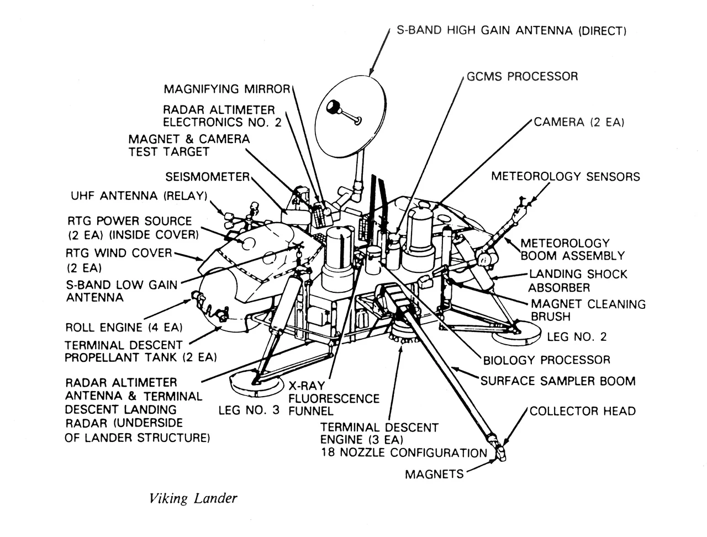
Viking lander line drawingNASA · Viking lander diagram
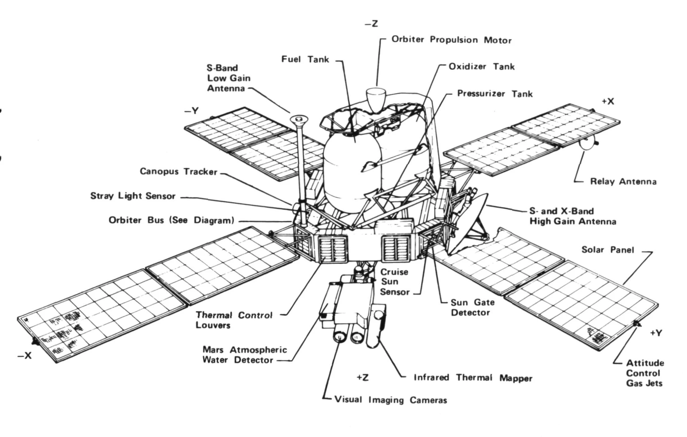
Viking orbiter line drawingNASA · Viking orbiter diagram
Captions and archive credits accompany each photograph.